결론부터. SAP를 HTTP로 쓰는 일은 방향이 둘뿐입니다. 밖에서 SAP를 부르면 ICF(SICF), SAP가 밖을 부르면 SM59 목적지 + CL_HTTP_CLIENT. 둘은 쓰는 T-Code도 디버깅 방법도 완전히 다릅니다.
이 노트는 eccehp7에 실제로 만들어 본 순서 그대로 갑니다 —
ICM 포트 확인 → 업무 FM → 핸들러 클래스 → SICF 등록 → 브라우저 호출,
그리고 반대 방향으로 SM59 type G 목적지까지.
워크프로세스·RFC의 기초는 → SAP 실행 환경 기초 — 워크프로세스와 RFC 지도를 먼저 보면 L2가 쉽습니다.
"웹페이지에서 SAP를 부르고 싶다"는 한 문장 안에 서로 반대인 두 가지 일이 섞여 있습니다. 먼저 이걸 갈라놓지 않으면, SICF를 봐야 할 때 SM59를 뒤지게 됩니다.
SAP끼리라면 RFC가 더 빠르고 편합니다. 문제는 상대가 SAP가 아닐 때입니다.
자바/파이썬/브라우저가 RFC로 붙으려면 SAP JCo·NW RFC SDK 같은
전용 라이브러리 설치와 SAP 커널 버전 맞추기가 필요합니다.
브라우저는 아예 불가능합니다. 반면 HTTP는 상대가 무엇이든 표준 클라이언트 하나면 됩니다.
그래서 대외 연계의 기본값은 HTTP입니다.
SM59를 RFC Destination 관점에서만 봤다면 → SAP 실행 환경 기초 L5에서 이어집니다. 이 노트 L8이 같은 T-Code의 다른 얼굴(연결 유형 G)입니다.
클래스를 만들기 전에 포트부터 확인합니다. 포트가 닫혀 있으면 핸들러를 아무리 잘 짜도 브라우저에는 "연결할 수 없음"만 뜨고, 그 화면에는 원인이 하나도 안 적혀 있습니다. 순서를 뒤집으면 하루를 날립니다.
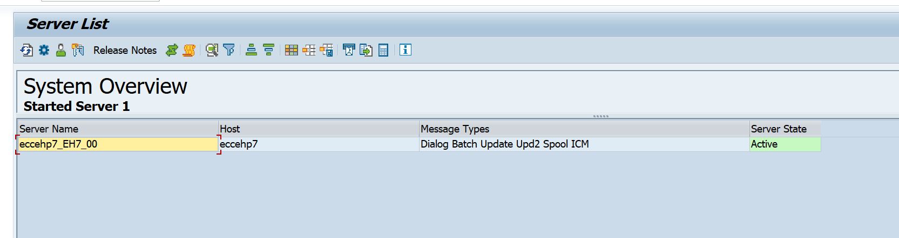
eccehp7_EH7_00 — <호스트>_<SID>_<인스턴스번호>. 이 시스템은 서버가 한 대뿐입니다. 이게 L10의 디버깅 이야기에서 중요해집니다 — 여러 대면 어느 서버로 요청이 갈지 모릅니다.ICM — 이 서버가 ICM 서비스를 갖고 있다는 뜻. 여기 ICM이 없으면 그 서버는 HTTP 요청을 받지 못합니다.SMICM 실행
메뉴 Goto > Services (단축 Shift+F1)
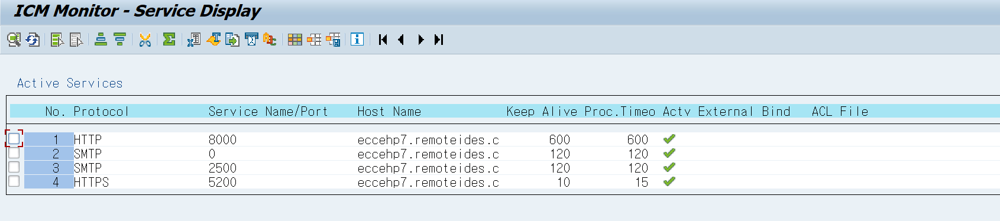
8000 — 이 노트가 쓸 포트입니다. Keep Alive 600 / Proc.Timeout 600초.0 — 포트 0 = 그 인바운드는 비활성입니다. 값이 없는 게 아니라 "쓰지 않음"의 표기입니다. 내 HTTP가 안 될 때 여기가 0이면 원인이 확정됩니다.5200 — Keep Alive 10 / Proc.Timeout 15초로 HTTP보다 훨씬 짧습니다. HTTPS로 무거운 요청을 보내면 15초에 끊길 수 있습니다.이 화면에서도 포트를 추가·변경할 수 있지만 ICM 재시작 시 소멸합니다.
영구 설정은 RZ10 프로파일의 icm/server_port_<n>입니다.
" 프로파일 파라미터 형식 icm/server_port_0 = PROT=HTTP, PORT=8000, TIMEOUT=30, PROCTIMEOUT=600 icm/server_port_1 = PROT=HTTPS, PORT=5200, TIMEOUT=30, PROCTIMEOUT=600 icm/server_port_2 = PROT=SMTP, PORT=0 " 0 = 비활성
Goto > Parameters > Display로 들어갑니다.
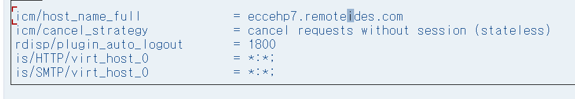
icm/host_name_full = eccehp7.remoteides.com — ICM이 자기 자신을 외부에 알릴 때 쓰는 FQDN입니다. 리다이렉트의 Location 헤더, 절대 URL, 쿠키 도메인이 이 값으로 만들어집니다. 짧은 호스트명이면 쿠키 도메인이 안 맞아 SSO·리다이렉트가 깨집니다.is/HTTP/virt_host_0 = *:*; — 가상 호스트 정의. *:* = 모든 Host 헤더 · 모든 포트를 이 가상 호스트가 받는다(catch-all). 그래서 SICF의 default_host 트리가 모든 요청을 처리합니다. 이게 기본값이고, 이 상태라 내 서비스를 default_host 밑에 만들면 됩니다.icm/cancel_strategy = stateless — 세션이 없는(stateless) 요청은 취소해도 된다는 정책. 내 ICF 핸들러는 기본이 stateless이므로 여기 해당합니다.rdisp/plugin_auto_logout = 1800 — 플러그인 세션 자동 로그아웃 30분.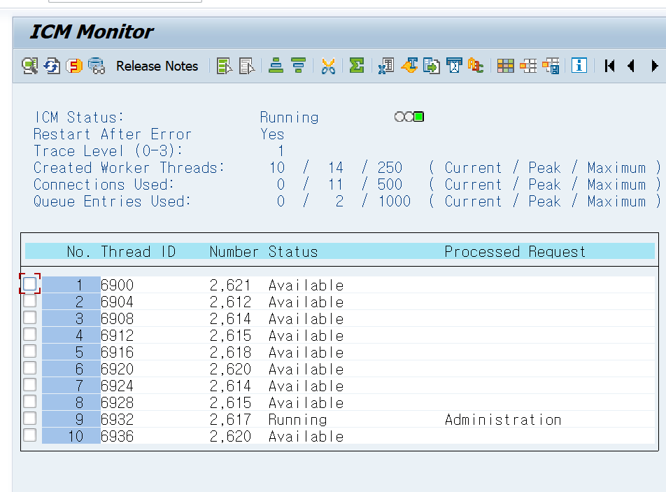
close( )를 빼먹으면 여기가 계속 올라갑니다(L9). 최대에 닿으면 내 프로그램만이 아니라 시스템 전체의 HTTP가 막힙니다.① SM51에 ICM이 있나 → ② SMICM > Services에 포트가 0이 아니고 Actv 체크가 있나
→ ③ Parameters의 virt_host_0이 *:*인가.
세 개가 통과하면 그 다음은 전부 ABAP 쪽 문제입니다. 범위가 반으로 줄어듭니다.
HTTP를 붙이기 전에 업무 로직이 SAP 안에서 먼저 돌아야 합니다. 핸들러 클래스 안에 로직을 직접 쓰면, 나중에 결과가 이상할 때 "HTTP가 문제인가 로직이 문제인가"를 가를 수가 없습니다.
① SE37에서 F8로 단독 테스트가 됩니다. 브라우저 없이 값이 맞는지 먼저 확정할 수 있습니다.
② 핸들러는 껍데기가 됩니다. 핸들러가 하는 일은 파싱·변환·응답 조립뿐이라 읽기 쉽습니다.
③ 같은 로직을 RFC로도 열 수 있습니다. 속성에서 스위치 하나만 바꾸면 됩니다 — 바로 다음 화면입니다.
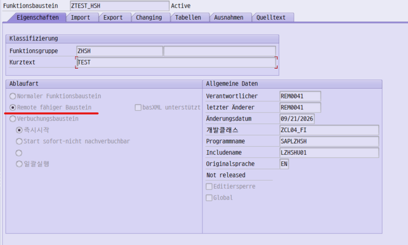
VALUE( ) 값 전달이어야 합니다. 참조 전달(by reference)은 원격 호출에서 성립하지 않기 때문입니다. 아래 소스가 이미 VALUE(IV_VBELN)인 이유가 이것입니다.SAPLZHSH — 접두사 SAPL + 함수그룹명. L10의 FUNCTION-POOL 에러가 바로 이 프로그램 이야기입니다.LZHSHU01 — FM 본체가 실제로 들어 있는 인클루드. 다음 화면의 트리와 맞춰 봅니다.ZCL04_FI — 로컬 오브젝트($TMP)가 아니라 패키지에 들어 있습니다. 즉 이관 가능한 상태입니다. $TMP로 만들면 개발기 밖으로 못 나갑니다.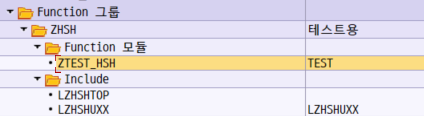
ZHSH의 인클루드 구조.
LZHSHTOP — 전역 선언부. 여기 첫 줄에 FUNCTION-POOL zhsh. 문장이 있습니다. 이 줄이 사라지면 L10의 그 에러가 납니다.LZHSHUXX — FM 구현 인클루드들을 INCLUDE로 묶는 파일. 그림 6에서 본 LZHSHU01을 이 안에서 끌어옵니다. 그래서 트리에는 TOP과 UXX 둘만 보입니다.L + 그룹명 + 접미사. 손으로 바꾸면 Function Builder가 동작하지 않습니다.이 노트의 예제 FM은 청구문서 번호를 받아 청구유형을 돌려주는 최소 로직입니다.
FUNCTION ztest_hsh. *"---------------------------------------------------------------------- *"*"Local Interface: *" IMPORTING *" VALUE(IV_VBELN) TYPE VBELN_VF " RFC 사용 가능 → VALUE 필수 *" EXPORTING *" VALUE(EV_FKART) TYPE FKART *"---------------------------------------------------------------------- CLEAR ev_fkart. SELECT SINGLE fkart FROM vbrk INTO ev_fkart WHERE vbeln = iv_vbeln. " VBRK = 대금청구 문서 헤더 ENDFUNCTION.
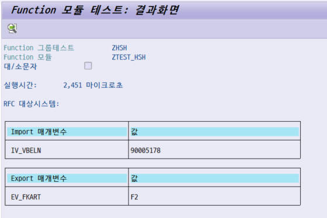
90005178 — 입력. 화면에 이렇게 보이지만 내부 값은 0090005178입니다. SE37 테스트 화면이 변환 exit(ALPHA)을 자동으로 걸어주기 때문입니다. 이게 3-5의 함정으로 이어집니다.F2 — 출력. 로직은 값을 돌려줬습니다. 다만 이것만으로는 아직 "맞다"고 할 수 없습니다 — 3-4에서 DB와 대조합니다.RFC 대상시스템 칸 — 그림 6에서 Remote 사용 가능으로 켰기 때문에 이 칸이 생겼습니다. 비워두면 로컬 실행, SM59 Destination을 넣으면 원격 시스템에서 실행됩니다. 이 칸의 존재 자체가 RFC 사용 가능이라는 증거입니다.SE37이 F2를 돌려줬다고 로직이 맞는 건 아닙니다.
엉뚱한 테이블을 읽었어도, 조건이 틀려 다른 행을 집었어도 값은 나옵니다.
원본을 한 번 보고 와야 끝납니다.
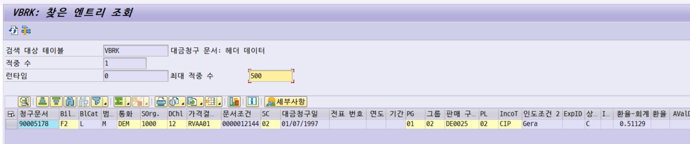
1 — VBELN으로 조회하니 정확히 한 건. VBELN이 VBRK의 단일 키라는 뜻이고, 그래서 FM의 SELECT SINGLE이 옳습니다. 여러 건이 나오는 조건이었다면 SELECT SINGLE은 아무 행이나 하나를 집는 위험한 코드가 됩니다.90005178 · Bil.(FKART) F2 — 그림 8의 EV_FKART = F2와 일치. 여기까지 맞춰야 "FM이 VBRK의 그 행을 읽었다"가 확정됩니다.VBTYP) M — SD 문서범주 M = 송장. VBRK에는 송장 외에 대변메모·차변메모·취소전표가 섞여 있으므로, 실제 업무 로직이라면 FKART만 보고 끝내면 안 됩니다. 이 노트는 학습용이라 단순화했습니다.DEM · 대금청구일 01/07/1997 — 독일 마르크, 유로 도입 이전. IDES 표준 데모 데이터라는 표시입니다. 실제 값이 아니니 금액·날짜의 현실성은 따지지 않습니다.RVAA01 · 문서조건 0000012144 — 가격조건으로 이어지는 키(KNUMV). 나중에 금액까지 응답에 싣게 되면 이 번호로 조건 레코드를 탑니다.① DB 원본(SE16) → ② FM 단독 실행(SE37) → ③ HTTP 응답(브라우저, L6). 세 곳의 값이 같아야 "HTTP 경로가 값을 왜곡하지 않았다"가 성립합니다. ②만 보고 넘어가면 ①과의 차이를 영원히 못 찾습니다 — 예를 들어 WHERE 조건이 틀려 다른 행을 집어도 ②는 멀쩡해 보입니다.
VBELN은 CHAR 10이고 DB에는 앞자리를 0으로 채운 0090005178로 들어 있습니다.
SE37·SE16 같은 화면은 CONVERSION_EXIT_ALPHA_INPUT을 자동으로 걸어줍니다 —
그래서 그림 8·그림 9 모두 90005178로 입력해도 찾아집니다.
그런데 HTTP 요청의 ?vbeln=90005178은 화면을 거치지 않으므로
'90005178 '(뒤에 공백 2개)로 들어가고, SELECT가 조용히 0건을 돌려줍니다.
에러도 덤프도 없이 빈 결과만 나오므로 원인을 찾기가 가장 어려운 종류입니다.
" 핸들러에서 반드시 직접 건다 CALL FUNCTION 'CONVERSION_EXIT_ALPHA_INPUT' EXPORTING input = lv_vbeln IMPORTING output = lv_vbeln.
ICF가 요청을 받으면 클래스 하나의 메서드 하나를 부릅니다. 그게 전부입니다.
인터페이스 IF_HTTP_EXTENSION을 구현하고 HANDLE_REQUEST를 채우면 됩니다.
handle_request를 부릅니다.server 하나뿐 — IF_HTTP_SERVER 참조. 여기서 request와 response가 갈라집니다.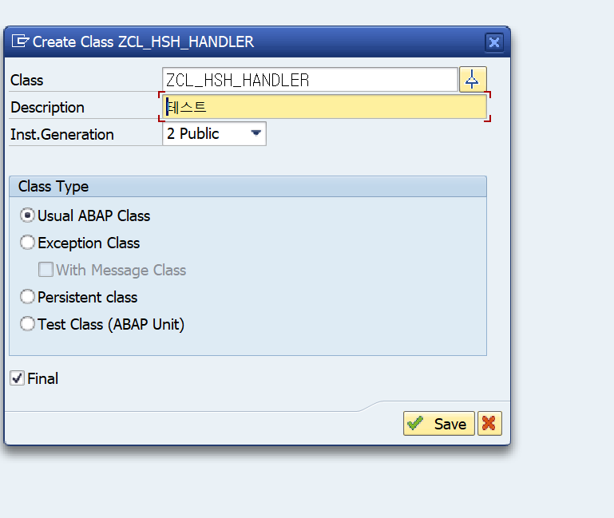
ZCL_HSH_HANDLER — 이 이름을 나중에 SICF Handler List에 그대로 적습니다(L5).저장 후 Interfaces 탭에 IF_HTTP_EXTENSION을 추가하면
IF_HTTP_EXTENSION~HANDLE_REQUEST가 메서드 목록에 자동으로 생깁니다. 구현은 여기에 씁니다.
METHOD if_http_extension~handle_request. DATA: lv_vbeln TYPE vbeln_vf, lv_fkart TYPE fkart, lv_json TYPE string. * ── 1) 입력 ─────────────────────────────────────────────── lv_vbeln = server->request->get_form_field( name = 'vbeln' ). IF lv_vbeln IS INITIAL. server->response->set_status( code = 400 reason = 'Bad Request' ). server->response->set_content_type( 'application/json; charset=utf-8' ). server->response->set_cdata( '{"retcode":"E","msg":"vbeln is required"}' ). RETURN. " 조용히 넘어가지 않는다 ENDIF. * ── 2) 화면이 해주던 변환을 직접 ─────────────────────────── CALL FUNCTION 'CONVERSION_EXIT_ALPHA_INPUT' EXPORTING input = lv_vbeln IMPORTING output = lv_vbeln. * ── 3) 업무 로직은 FM에 위임 ─────────────────────────────── CALL FUNCTION 'ZTEST_HSH' EXPORTING iv_vbeln = lv_vbeln IMPORTING ev_fkart = lv_fkart. IF lv_fkart IS INITIAL. server->response->set_status( code = 404 reason = 'Not Found' ). server->response->set_content_type( 'application/json; charset=utf-8' ). server->response->set_cdata( '{"retcode":"E","msg":"invoice not found"}' ). RETURN. ENDIF. * ── 4) 응답 ─────────────────────────────────────────────── CONCATENATE '{"vbeln":"' lv_vbeln '","fkart":"' lv_fkart '","retcode":"S","msg":"OK"}' INTO lv_json. " 학습용 최소 구현 — 제대로 된 방법은 L7 server->response->set_status( code = 200 reason = 'OK' ). server->response->set_content_type( 'application/json; charset=utf-8' ). server->response->set_cdata( data = lv_json ). ENDMETHOD.
일부 릴리즈에서 본문을 먼저 쓰면 헤더·상태 변경이 반영되지 않는 경우가 보고됩니다.
항상 set_status → set_content_type/set_header_field → set_cdata 순으로 쓰면 릴리즈를 안 탑니다.
| 용도 | 호출 | 메모 |
|---|---|---|
| 쿼리스트링 읽기 | server->request->get_form_field( name = 'vbeln' ) | GET의 ?a=1과 POST의 x-www-form-urlencoded 본문을 읽는다 |
| 본문 통째로 | server->request->get_cdata( ) | JSON 본문은 여기로만 읽힌다. form field로는 안 잡힌다 |
| 바이너리 본문 | server->request->get_data( ) | xstring. 파일 업로드 |
| 헤더 읽기 | server->request->get_header_field( name = 'X-Api-Key' ) | 인증 토큰 검증에 사용 |
| 메서드 판별 | server->request->get_method( ) | 'GET' / 'POST' |
| 상태코드 | server->response->set_status( code = 200 reason = 'OK' ) | 실패 시 4xx/5xx를 반드시 준다 |
| 응답 헤더 | server->response->set_header_field( name = … value = … ) | 파라미터명은 NAME/VALUE |
| 응답 본문 | server->response->set_cdata( data = lv_json ) | 문자열 응답 |
ABAP 공식 문서의 ICF 예제조차 입력값에 escape를 겁니다. HTML을 돌려주거나 동적 WHERE를 만든다면 반드시 통과시킵니다.
DATA(lv_safe) = cl_abap_dyn_prg=>escape_quotes(
escape( val = server->request->get_form_field( name = 'q' )
format = cl_abap_format=>e_xss_ml ) ).
이 노트 예제는 VBELN이라는 타입 있는 필드에 바로 넣고 FM에 넘기므로 노출이 작지만,
자유 문자열을 받는 순간 필수가 됩니다.
SICF에서 가장 먼저 이해할 것은 이겁니다 — URL 매핑이라는 설정이 따로 없습니다. 트리에서 노드를 어디에 만드느냐가 그대로 URL 경로가 됩니다.
default_host는 URL에 나타나지 않습니다 — 가상 호스트 이름일 뿐입니다. is/HTTP/virt_host_0 = *:*(그림 4)라서 모든 요청이 이 트리로 들어옵니다./sap 아래 z_hsh → URL은 /sap/z_hsh. 경로를 바꾸고 싶으면 노드를 옮기는 것 말고 방법이 없습니다./sap/public/ 아래에는 만들지 않습니다 — 그 가지는 인증 없이 SAPSYS로 도는 시스템 전용 구역입니다.SICF를 실행하면 서비스가 수천 개인 트리가 나옵니다. 필터로 바로 좁힙니다.
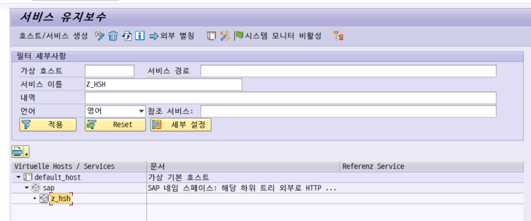
sap(SAP 네임 스페이스 설명) > z_hsh 세 단계가 표시됨">Z_HSH 입력 → 적용 — 트리가 해당 노드까지의 경로만 남기고 접힙니다. 전체 트리를 손으로 펼칠 필요가 없습니다.default_host — "가상 기본 호스트". 그림 4의 is/HTTP/virt_host_0 = *:*가 바로 이 호스트입니다. 모든 요청이 여기로 들어옵니다.sap — "SAP 네임 스페이스: 해당 하위 트리 외부로 HTTP…" 표준 구역입니다. 우리 노드는 이 아래에 답니다.z_hsh — 트리 위치가 곧 URL이므로 이 경로가 /sap/z_hsh가 됩니다.중요한 건 어느 노드에서 우클릭하느냐입니다. 그 노드의 경로가 URL 앞부분이 되기 때문입니다.
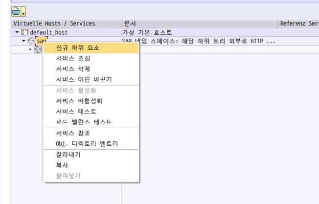
default_host > sap 우클릭 — 여기서 만들어야 /sap/…가 된다.
sap에서 만들면 /sap/<이름>, sap/bc에서 만들면 /sap/bc/<이름>. 나중에 경로를 바꾸려면 노드를 옮겨야 하니 처음에 정해야 합니다.sap 노드는 이미 활성입니다. 5-5에서 내 노드와 정반대인 모습을 보게 됩니다.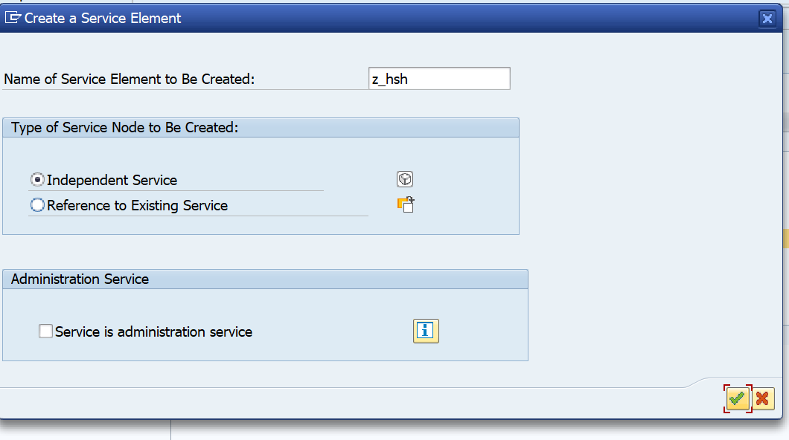
z_hsh — 이 문자열이 URL에 그대로 들어갑니다. 소문자로 쓰는 게 안전합니다 — URL 경로는 대소문자를 구분합니다.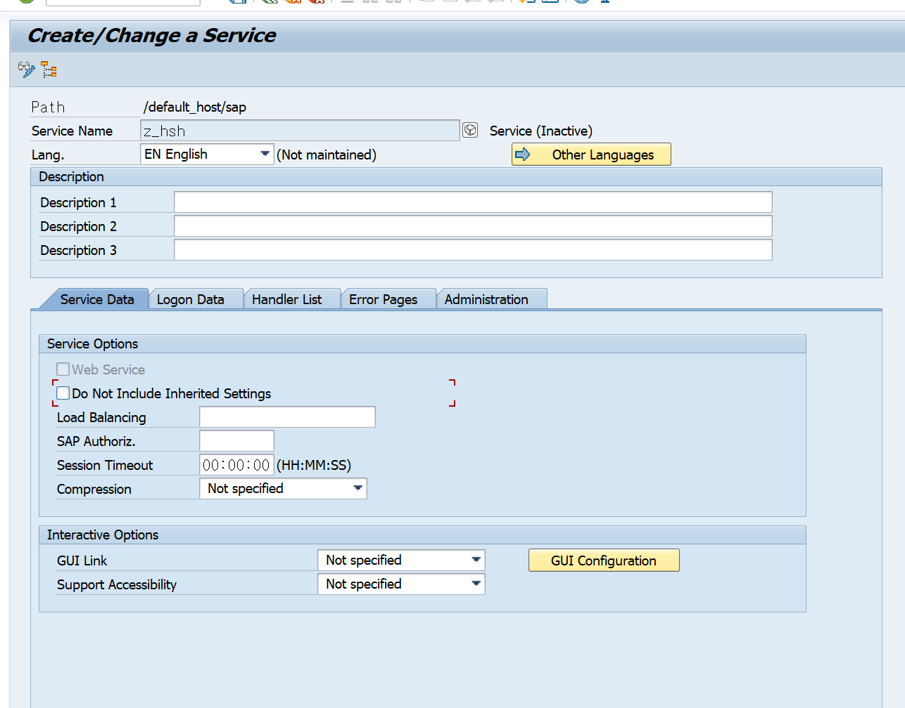
/default_host/sap + Service Name z_hsh → URL /sap/z_hsh로 확정됩니다.00:00:00 — 0이면 시스템 기본값을 따릅니다. stateless 핸들러라 건드릴 일이 없습니다.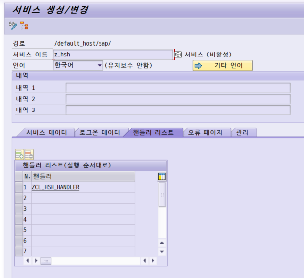
ZCL_HSH_HANDLER — 그림 11에서 만든 클래스명을 그대로 적습니다. 철자가 틀려도 저장은 되고, 호출할 때가 되어서야 에러가 납니다. 클래스가 활성화되어 있어야 런타임에 찾습니다.handle_request를 부르고, 각 핸들러의 반환값(CO_FLOW_OK 등)이 다음 핸들러를 부를지 정합니다.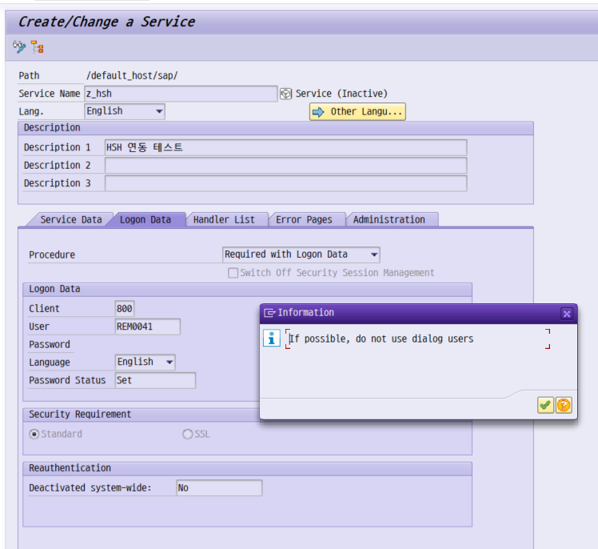
Required with Logon Data — 브라우저에 로그인을 요구하지 않고, 여기 적힌 계정으로 무조건 실행합니다. 즉 익명 서비스가 됩니다.800 / User REM0041 — 실행에 쓸 계정. 이 계정의 권한이 곧 "URL을 아는 모든 사람"의 권한입니다.REM0041은 그림 6의 담당자와 같은 ID — 즉 내 개인 dialog 계정을 그대로 박은 상태입니다. 팝업이 경고하는 바로 그 경우고, 학습 단계에서는 흔히 이렇게 시작합니다. 고칠 방법은 아래 경고 상자에.Set — 패스워드가 저장돼 있다는 표시. 이 계정의 패스워드를 바꾸면 서비스가 즉시 죽습니다 — 여기 저장된 값은 따라 바뀌지 않습니다.Standard — 평문 HTTP 허용. SSL을 고르면 HTTPS로만 받습니다. 외부에 노출되는 서비스라면 SSL로 올려야 합니다.Service (Inactive) — 인증을 설정했다고 열리는 게 아닙니다. 활성화는 5-5에서 따로.| Procedure | 동작 | 언제 |
|---|---|---|
| Standard | HTTP 필드 → SSL 인증서 → 로그온 티켓 → Basic Auth → … 순서로 시도하고, 전부 실패하면 마지막에 저장된 Logon Data 사용 | 사람이 브라우저로 직접 쓰는 서비스 |
| Alternative Logon Procedure | 위 목록에서 쓸 절차와 순서를 직접 고름 | SSO 구성이 특수할 때 |
| Required with Logon Data | 저장된 계정만 사용. 인증을 아예 요구하지 않음 | 기계가 부르는 API. 권한을 최소로 깎아야 함 |
① 라이선스 — dialog user는 named-user 측정 대상입니다. 기계 호출용으로 쓰면 라이선스에 잡힙니다.
② 패스워드 만료 — dialog user는 만료 정책과 초기 패스워드 강제 변경 대상입니다.
만료되는 날 서비스가 통째로 죽습니다. 그것도 아무도 모르게.
③ 권한 확대 경로 — SICF에 자격증명이 저장되어 있는데 그 계정으로 SAP GUI 대화형 로그온이 가능합니다.
Service 타입은 GUI 로그온 자체가 막혀 있습니다.
지금 상태를 고치는 순서 — 그림 18은 개인 계정 REM0041이 박힌 상태입니다.
SU01 → 예: ZSVC_HSH 생성, 사용자 유형 = Service
이 서비스가 실제로 쓰는 오브젝트만 담은 전용 롤 부여 (S_ICF 포함). SAP_ALL 금지
SICF 로그온 데이터의 User/Password를 그 계정으로 교체 → 저장 → 브라우저로 재호출
권한 에러가 나면 그 서비스 사용자로 SU53을 봅니다 — 내 ID로 보면 아무것도 안 나옵니다
바꾸고 나면 디버깅 방식도 같이 바뀝니다 → L10-2.
저장만으로는 열리지 않습니다. 트리에서 노드를 우클릭해 서비스 활성화를 눌러야 합니다.
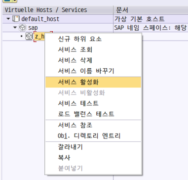
z_hsh 우클릭 — 활성/비활성 토글 지점.
sap 노드와 정확히 반대 모양입니다. 메뉴만 봐도 현재 상태를 알 수 있습니다.문서에 흔히 적힌 증상은 403 Forbidden("Service cannot be reached")입니다. 그런데 이 시스템(EH7)에서는 404가 떴습니다.
404는 보통 "경로가 없다"는 뜻이라 노드 이름 철자와 만든 위치부터 뒤지게 됩니다. 그러다 시간을 날립니다. 순서를 바꿔야 합니다 — 호출이 실패하면 상태 코드와 무관하게 활성화 여부를 먼저 본다. 트리 색이나 위 우클릭 메뉴 한 번이면 3초에 끝납니다.
활성화 후 트리의 노드 색이 상태를 말해 줍니다.
내 노드만 활성화해도 sap 같은 상위 노드가 비활성이면 열리지 않습니다.
증상은 내 노드를 껐을 때와 똑같아서 구분이 안 갑니다.
그래서 그림 14에서 sap 노드의 메뉴를 확인한 것입니다 — 거기서 활성화가 회색이었으니 상위는 정상입니다.
활성화할 때 서브트리 포함 옵션으로 위에서부터 켜는 게 확실합니다.
바로 내 URL을 치면 실패했을 때 원인 후보가 너무 많습니다 — 네트워크, 포트, ICF 트리, 핸들러, 권한. 표준 서비스 하나를 먼저 불러 범위를 반으로 자릅니다.
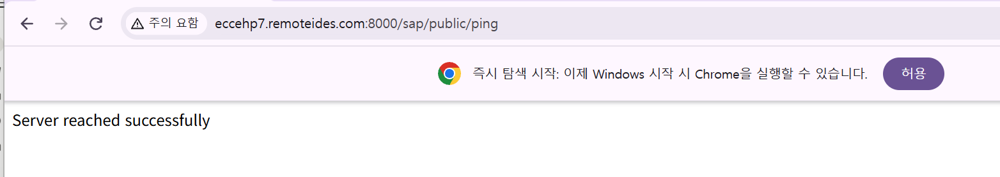
/sap/public/ping — HTTP 스택 생사 확인 전용 서비스.
:8000 — 그림 3에서 확인한 HTTP 포트. 호스트명은 그림 4의 icm/host_name_full과 같습니다./sap/public/ping 노드 자체가 비활성입니다. SICF에서 켜면 됩니다." 브라우저 주소창 http://eccehp7.remoteides.com:8000/sap/z_hsh?vbeln=90005178 " 또는 SICF에서 노드 우클릭 > Test Service (URL을 자동 조립해준다 — 오타 방지)
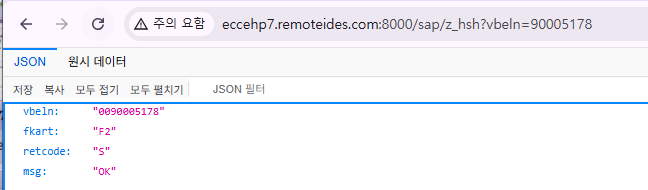
vbeln이 0090005178 — 앞자리 0이 붙었습니다. L3의 ALPHA 변환이 제대로 걸렸다는 증거입니다. 90005178로 나왔다면 변환을 빼먹은 것이고, 그러면 fkart는 비어 있었을 겁니다.fkart가 F2 — 그림 8(SE37)·그림 9(SE16 VBRK)와 같은 값. DB → FM → HTTP 세 점이 일치했으므로 HTTP 경로가 값을 왜곡하지 않았음이 확정됩니다.retcode / msg — HTTP 상태코드와 별도로 본문에도 성공 여부를 싣습니다. 프록시·게이트웨이가 상태코드를 갈아끼우는 환경이 있어서, 호출자가 본문만으로도 판정할 수 있게 하는 관행입니다. 단 둘이 어긋나면 안 됩니다 — 200인데 retcode=E는 금지입니다.vbeln, fkart) — CALL TRANSFORMATION id의 asJSON은 보통 대문자로 냅니다. 즉 이 응답은 문자열로 직접 조립한 것입니다. 필드가 늘면 L7의 방식으로 갈아타야 합니다.| 증상 | 먼저 볼 곳 | 흔한 원인 |
|---|---|---|
| 연결 자체가 안 됨 | SMICM > Goto > Services | 포트가 0이거나 Actv 체크 없음 · 방화벽 |
| 403 Forbidden | SICF 노드 활성화 여부 | 서비스 비활성 — 특히 상위 노드(파랑). "Service cannot be reached"가 같이 뜬다 |
| 404 Not Found | ① 활성화 여부 → ② 트리 경로 | 비활성일 때도 404가 난다(이 시스템에서 관측). 활성 상태인데도 404면 그때 노드 이름 철자 · 대소문자 · 만든 위치를 본다 |
| 401 인증창이 뜸 | Logon Data 탭 | Procedure가 Standard인데 Logon Data가 비어 있음 |
| 500 또는 흰 화면 | ST22 | 핸들러 ABAP 덤프. 단문·장문을 먼저 확보하고 고친다 |
| 200인데 결과가 빔 | 핸들러 입력값 | ALPHA 변환 누락(L3) · 파라미터 이름 오타 |
| 권한 에러 | SU53 (서비스 사용자로) | 전용 롤에 오브젝트 누락 |
| ICM 레벨 에러 | SMICM > Goto > Trace File | SSL · 프록시 · 타임아웃 (L10) |
교과서적으로는 403 = 노드는 있는데 꺼져 있다, 404 = 그 경로에 노드가 없다 입니다. 그런데 이 시스템에서는 비활성 서비스가 404를 냈습니다(L5-5). 릴리즈·경로·가상호스트 설정에 따라 갈립니다.
그래서 실무 순서는 이렇습니다 — ① SICF에서 활성화 상태(노드 색 · 우클릭 메뉴)를 3초 안에 확인 → ② 활성인데도 안 되면 그때 경로 철자를 본다. 반대로 하면 멀쩡한 경로를 몇 번씩 다시 읽게 됩니다.
L4에서는 CONCATENATE로 JSON을 손으로 붙였습니다. 값 두 개짜리 학습용이라 그랬을 뿐,
필드가 늘거나 내부 테이블을 배열로 내보내는 순간 따옴표 이스케이프와 콤마 위치에서 무너집니다.
제대로 된 방법은 둘입니다.
compress(초기값 제거) · pretty_name(camelCase)대상은 ECC 6.0 EHP7(SAP_BASIS 740)이고, /UI2/CL_JSON은 UI2 애드온 동봉 클래스입니다.
IDES 유형 시스템은 있을 수도, 없을 수도 있습니다. 쓰기 전에 실측합니다.
SE24 → /UI2/CL_JSON 입력 → Display. 없으면 Class ... does not exist
System > Status > Component Information에서 SAP_UI / UI2 계열 컴포넌트 확인
결과와 무관하게 이 프로젝트의 기본값은 A(sXML)로 갑니다 — 애드온에 묶이지 않아야 나중에 다른 시스템으로 옮겨도 그대로 돕니다. 스펙 정합이 꼭 필요해지면 그때 전환합니다.
" ── ABAP → JSON ─────────────────────────────────────────── DATA(lo_writer) = cl_sxml_string_writer=>create( type = if_sxml=>co_xt_json ). CALL TRANSFORMATION id SOURCE values = lt_data RESULT XML lo_writer. DATA(lv_xjson) = lo_writer->get_output( ). " xstring DATA(lv_json) = cl_abap_codepage=>convert_from( lv_xjson ). " string " ── JSON → ABAP ─────────────────────────────────────────── CALL TRANSFORMATION id SOURCE XML lv_xjson RESULT values = lt_data.
TYPES: BEGIN OF ty_out, vbeln TYPE vbeln_vf, fkart TYPE fkart, END OF ty_out. DATA: ls_out TYPE ty_out. ls_out-vbeln = lv_vbeln. ls_out-fkart = lv_fkart. DATA(lo_writer) = cl_sxml_string_writer=>create( type = if_sxml=>co_xt_json ). CALL TRANSFORMATION id SOURCE data = ls_out RESULT XML lo_writer. server->response->set_content_type( 'application/json; charset=utf-8' ). server->response->set_cdata( cl_abap_codepage=>convert_from( lo_writer->get_output( ) ) ).
{"DATA":{"VBELN":"0090005178","FKART":"F2"}} 형태가 나옵니다.
프런트에서 vbeln 소문자를 기대한다면 어긋납니다.
구조체 필드명을 스펙에 맞춰 선언하거나, 전용 ST/XSLT 변환을 만들거나,
/UI2/CL_JSON의 pretty_name을 씁니다.
어느 쪽이든 "JSON 형식은 내가 정하는 게 아니라 상대가 정한다"는 게 출발점입니다.
TREX/BWA 계열 패키지 소속이라 시스템에 아예 없을 수 있고(KBA 2141584), 공개 API로 문서화된 것도 아닙니다. 검색하면 자주 나오지만 신규 개발에 쓰지 않습니다.
여기서부터 방향이 바뀝니다. SAP가 클라이언트가 되어 외부 API를 부릅니다.
SM59는 같은데 연결 유형이 G(HTTP Connection to External Server)입니다 —
RFC Destination과는 화면 구성도 다릅니다.
https, Inactive면 http. 이걸 모르면 "URL 어디에 https를 적나"를 한참 찾습니다.set_request_uri로 붙입니다.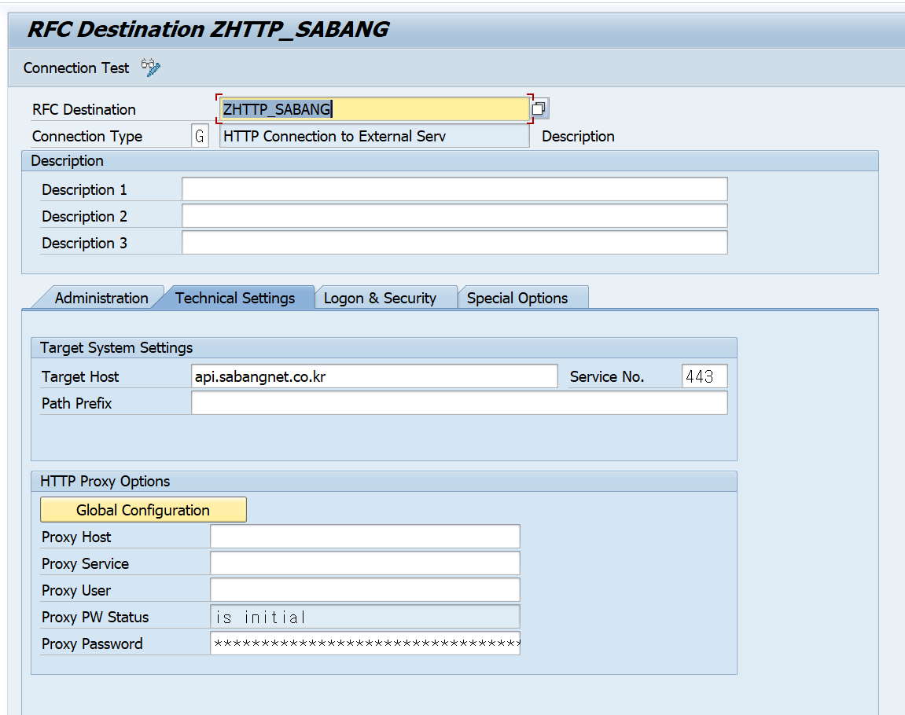
G — HTTP Connection to External Server. RFC(type 3)나 TCP/IP(type T)와는 별개의 화면입니다.api.sabangnet.co.kr / Service No. 443 — 호스트와 포트. 443이라고 해서 자동으로 HTTPS가 되지 않습니다. 포트는 숫자일 뿐이고, 프로토콜은 다음 탭의 SSL 스위치가 정합니다.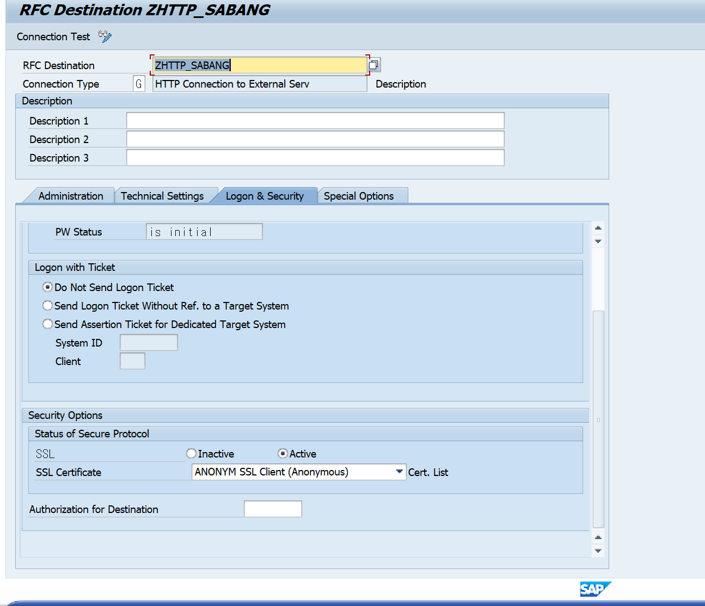
Active → 이 순간부터 URL이 https://가 됩니다.ANONYM SSL Client (Anonymous) — SAP가 쓸 PSE(보안 저장소)를 고르는 자리입니다. "Anonymous" = SAP가 클라이언트 인증서를 제시하지 않는다(상호 TLS 아님). 서버 인증서 검증은 여전히 합니다.ANONYM PSE의 인증서 목록이 곧 신뢰 저장소입니다. 상대 서버 인증서 체인의 Root CA가 여기 없으면 퍼블릭 CA라도 검증에 실패합니다. ECC 6.0 EHP7의 PSE는 비어 있거나 오래된 CA 몇 개뿐인 경우가 흔합니다.
브라우저로 해당 HTTPS 주소 접속 → 인증서 체인 전체를 Base64로 내보내기
STRUST → SSL client SSL Client (Anonymous) 노드 → Import → Add to Certificate List (체인 전체 반복)
SM59로 돌아와 Connection Test
미등록 시 증상: ICM_HTTP_SSL_ERROR /
ICM_HTTP_SSL_PEER_CERT_UNTRUSTED.
SMICM 트레이스(level 3)에 SSSLERR_PEER_CERT_UNTRUSTED와 함께
어느 PSE 파일에 무슨 인증서가 없는지가 다 찍힙니다 — 추측하지 말고 그걸 읽습니다.
ECC 6.0 EHP7 + 구형 CommonCryptoLib은 TLS 1.2를 못 하는 경우가 있습니다.
반면 요즘 외부 API는 TLS 1.0/1.1을 거부합니다.
인증서를 아무리 잘 넣어도 여기서 막히면 아웃바운드는 불가능합니다.
착수 전에 먼저 확인합니다 — disp+work -V의 SAPCRYPTOLIB 버전(8.5.x 이상 권장),
프로파일 ssl/client_ciphersuites.
막히면 아웃바운드를 범위에서 빼고 인바운드(L2~L7)만으로 목표를 달성하는 쪽이 현실적입니다.
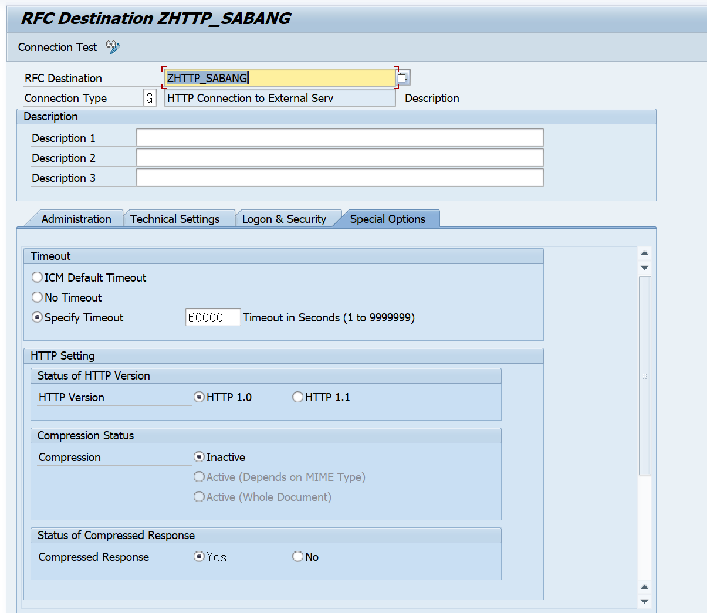
1.0 — 1.1은 chunked transfer encoding과 Keep-Alive를 씁니다. 이걸 못 받는 구형 서버·미들웨어·역프록시가 있어서 400/411/501이 나거나 본문이 빈 채로 도착합니다. 외부 API가 이상하게 굴면 HTTP 1.0 + 압축 끄기로 내려보는 게 표준 1차 조치입니다.Inactive — 요청을 gzip으로 보내지 않습니다. 상대가 gzip을 모르면 파싱이 깨지므로 끄는 게 안전한 출발점입니다.Yes — 응답 압축은 허용. 응답이 gzip인데 못 풀면 get_cdata가 깨진 문자열을 돌려줍니다. 증상이 이러면 여기를 No로.60000 — 화면 레이블은 "Seconds"입니다. 그대로면 16.7시간으로 과도합니다. 응답이 안 오면 워크프로세스가 그만큼 잡혀 있습니다. 30~60초 수준으로 낮추는 게 맞습니다.화면 레이블은 초지만, 릴리즈에 따라 이 값이 밀리초로 동작한다는 보고가 있습니다. 실제 동작은 일부러 응답 없는 엔드포인트를 호출해 몇 초 만에 끊기는지 측정해 확정합니다. 어느 쪽이든 60000은 손봐야 하는 값입니다.
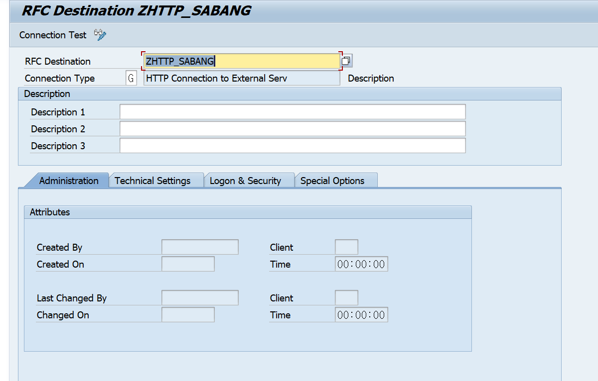
SM59 목적지를 만들었으면 ABAP은 목적지 이름만 알면 됩니다. URL·포트·SSL·프록시가 전부 SM59에 있으니 코드에는 남지 않습니다.
DATA: lo_client TYPE REF TO if_http_client, lv_code TYPE i, lv_reason TYPE string, lv_resp TYPE string. * ── 1) 생성 ─────────────────────────────────────────────── cl_http_client=>create_by_destination( EXPORTING destination = 'ZHTTP_SABANG' IMPORTING client = lo_client EXCEPTIONS argument_not_found = 1 destination_not_found = 2 destination_no_authority = 3 plugin_not_active = 4 internal_error = 5 OTHERS = 6 ). IF sy-subrc <> 0. " 로그 남기고 종료. 여기서 조용히 넘어가면 안 된다 RETURN. ENDIF. * ── 2) 요청 조립 ─────────────────────────────────────────── lo_client->request->set_method( if_http_request=>co_request_method_post ). lo_client->request->set_version( if_http_request=>co_protocol_version_1_1 ). cl_http_utility=>set_request_uri( " Path Prefix 뒤에 붙는 경로 EXPORTING request = lo_client->request uri = '/api/v1/orders' ). lo_client->request->set_content_type( 'application/json; charset=utf-8' ). lo_client->request->set_header_field( name = 'Authorization' value = lv_token ). lo_client->request->set_cdata( lv_json_body ). * ── 3) 전송 ─────────────────────────────────────────────── lo_client->send( EXCEPTIONS http_communication_failure = 1 http_invalid_state = 2 OTHERS = 4 ). IF sy-subrc <> 0. lo_client->close( ). RETURN. ENDIF. * ── 4) 수신 ─────────────────────────────────────────────── lo_client->receive( EXCEPTIONS http_communication_failure = 1 http_invalid_state = 2 http_processing_failed = 3 OTHERS = 4 ). IF sy-subrc <> 0. lo_client->close( ). RETURN. ENDIF. * ── 5) 판정 ─ sy-subrc가 0이어도 HTTP는 실패했을 수 있다 ── lo_client->response->get_status( IMPORTING code = lv_code reason = lv_reason ). lv_resp = lo_client->response->get_cdata( ). IF lv_code < 200 OR lv_code >= 300. " 4xx / 5xx — 로그에 code + reason + 응답 본문을 같이 남긴다 ENDIF. * ── 6) 반드시 닫는다 ─────────────────────────────────────── lo_client->close( ).
send/receive의 예외는 통신·상태 오류만 잡습니다.
상대가 500 Internal Server Error를 돌려줘도 통신은 성공했으므로 sy-subrc = 0입니다.
get_status의 code를 별도로 반드시 판정해야 합니다.
이걸 빼면 "실패했는데 성공으로 기록되는" 로그가 쌓입니다.
close( )를 빼면 그림 5의 Connections Used가 계속 올라갑니다.
최대(500)에 닿으면 시스템 전체의 HTTP가 막힙니다 — 다른 사람의 인터페이스까지.
모든 종료 경로(정상·예외·조기 RETURN)에서 빠지지 않도록 배치합니다.
병렬로 돌릴 계획이면 부하 중에 SMICM의 Connections Used·Queue Entries Used를 실측해
동시 실행 개수 상한을 정합니다.
| 비교 | create_by_destination | create_by_url |
|---|---|---|
| URL · 포트 | SM59에 외부화 | 소스에 하드코딩 |
| SSL PSE | SM59 Logon & Security | ssl_id 직접 전달 |
| 프록시 | SM59 Technical Settings | 파라미터로 직접 |
| 연결 테스트 | SM59 Connection Test 가능 | 없음 |
| DEV→QAS→PRD 주소 차이 | SM59 값만 다르게, 코드는 동일 | 코드 수정 또는 별도 설정 테이블 |
| 권한 체크 | 목적지 권한 (destination_no_authority) | 없음 |
create_by_url은 1회성 확인에만 씁니다.
운영 이관을 생각하면 엔드포인트가 소스에 박히는 구조는 그 자체로 결함입니다.
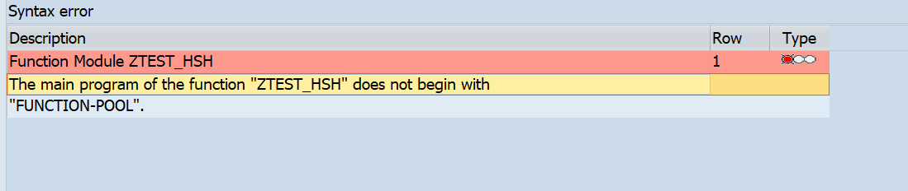
SAPLZHSH를 열어 봤더니 첫 문장이 FUNCTION-POOL이 아니다, 즉 함수그룹 프레임워크 프로그램으로 성립하지 않는다는 뜻입니다.| 원인 | 상황 | 조치 |
|---|---|---|
| ① 함수그룹 미활성 (가장 흔함) | 그룹을 새로 만들고 FM만 활성화 시도 | SE80 → 함수그룹 우클릭 → Activate. SAPLZHSH + 인클루드 전체가 같이 활성화된다 |
| ② TOP 인클루드 손상 | LZHSHTOP이 없거나 FUNCTION-POOL zhsh. 줄이 지워짐 | SE38로 LZHSHTOP 첫 줄 복원 → 활성화 → SAPLZHSH 활성화 → FM 활성화 |
| ③ 메인 프로그램을 수동 생성 | SAPLZHSH를 SE38에서 일반 리포트로 만듦(REPORT로 시작) | 그 프로그램 삭제 후 SE37에서 함수그룹을 정식 생성 |
| ④ FM 복사·이동 | 다른 그룹으로 Copy했는데 대상 그룹이 미생성·미활성 | 대상 그룹을 먼저 만들고 활성화한 뒤 복사 |
| ⑤ 부분 이관 | FM만 이관되고 메인 프로그램·TOP 인클루드가 안 넘어감 | 오브젝트 리스트에 R3TR FUGR ZHSH 전체가 들어갔는지 확인 후 재이관 |
| ⑥ 첫 문장이 밀림 | FUNCTION-POOL 앞에 TYPE-POOLS 등이 들어감 | FUNCTION-POOL을 첫 실행 문장으로 올림 |
증상 SE37에서 FM 활성화 시 위 메시지
재현 조건 신규 함수그룹 생성 직후 / FM 복사 직후 / 부분 이관 직후
원인 확인 SE38 → SAPLZHSH → Display로 첫 문장을 눈으로 본다. SE80 → 함수그룹 → Object List에 LZHSHTOP·LZHSHUXX가 있는지 본다
조치 함수그룹 통째로 Activate
확인 SE37에서 Ctrl+F2 무오류 → 활성화
외부 브레이크포인트는 실행 사용자명이 일치해야만 걸립니다.
그런데 L5에서 Logon Data를 Required with Logon Data + 서비스 사용자로 잡았다면,
핸들러는 그 서비스 사용자로 실행됩니다.
내 dialog ID로 브레이크포인트를 걸어놓고 아무리 호출해도 영원히 안 걸립니다.
조치 — SE80 > Utilities > Settings > ABAP Editor > Debugging에서
디버깅 대상 사용자를 서비스 사용자명으로 바꿉니다.
지금 이 시스템은 반대 상황입니다 — 그림 18에서 로그온 데이터에 개인 계정
REM0041을 박아 뒀기 때문에 핸들러가 내 ID로 돌고, 브레이크포인트가 그냥 걸립니다.
편하다고 이대로 두면 안 됩니다. L5-4의 조치대로 Service 타입 계정으로 바꾸는 순간
브레이크포인트가 안 걸리기 시작합니다 — 그때 이 항목을 다시 보게 됩니다.
그래도 안 걸리면 — 디버깅 동안만 Logon Data를 Standard로 되돌리고
Basic 인증으로 내 ID를 써서 호출합니다. 끝나면 반드시 원복합니다.
같은 함정이 RFC에도 있습니다 → ABAP 디버깅 실무 노트의 통신 사용자 표가 같은 이야기의 RFC 쪽입니다.
사용자 대신 단말 ID로 요청을 잡는 방식이 있지만, HTTP 요청에 Terminal ID를 실으려면 SAP Client Plug-In이 필요하고 그건 Internet Explorer 전용입니다. 지금은 쓸 수 없습니다.
ABAP 덤프(ST22)에도 없고 핸들러에도 안 들어온다면 ICM에서 끊긴 것입니다.
SMICM 실행 (client 000)
Trace > Reset — 먼저 초기화. 안 하면 과거 로그와 섞여 못 읽습니다
Goto > Trace Level > Set → 3
문제 재현
Goto > Trace File > Display All (파일명 dev_icm)
Trace Level을 1로 원복 — 3으로 두면 디스크와 성능을 계속 먹습니다
SSL 실패라면 SSSLERR_PEER_CERT_UNTRUSTED와 함께
어느 PSE 파일에 어떤 Subject/Issuer/Serial의 인증서가 없는지까지 찍힙니다.
STRUST에서 헤맬 필요 없이 그대로 읽고 넣으면 됩니다.
X-CSRF-Token을 요구하며 403을 내는 주체는 SAP Gateway(OData) 프레임워크입니다.
IF_HTTP_EXTENSION 자체 핸들러는 opt-in이라
GET_XSRF_TOKEN/VALIDATE_XSRF_TOKEN을 내가 직접 부르지 않는 한 검사하지 않습니다.
즉 "끄는 방법"을 찾을 필요가 없습니다.
확인 필요 — 헤더 없이 POST를 한 번 던져 403 + "CSRF token validation failed"가 나오는지만 실측하면 끝납니다. 안 나오면 이 항목은 잊어도 됩니다.
실제 위험은 CSRF가 아니라 익명 서비스 그 자체입니다 — URL을 아는 누구나 서비스 사용자 권한으로 호출할 수 있습니다. 대책은 부록에 정리했습니다.
| 하고 싶은 일 | 가는 곳 | 핵심 |
|---|---|---|
| HTTP 포트가 열렸나 | SMICM > Goto > Services | 포트 0 = 비활성 · Actv 체크 확인 |
| 포트를 영구히 바꾸기 | RZ10 | icm/server_port_<n>. SMICM 변경은 재시작 시 소멸 |
| HTTP 스택 생사 확인 | 브라우저 /sap/public/ping | "Server reached successfully"면 ICM·ICF 정상 |
| 서비스 만들기 | SICF | 트리 위치 = URL · Handler List에 클래스 · Activate 잊지 말 것 |
| 호출이 실패할 때 1순위 | SICF 노드 우클릭 | 활성화가 살아 있으면 = 지금 비활성. 403이든 404든 여기부터 |
| URL 확인·테스트 | SICF > 노드 우클릭 > Test Service | URL을 자동 조립 — 오타 방지 |
| 누구 권한으로 도는지 | SICF > Logon Data | Required with Logon Data = 익명 · Service 타입 계정 |
| 외부 API 부르기 | SM59 (type G) | Target Host + Service No + Path Prefix, SSL 스위치가 프로토콜 결정 |
| HTTPS 인증서 | STRUST | SSL Client (Anonymous)에 상대 Root CA import |
| 외부 API가 이상할 때 | SM59 > Special Options | HTTP 1.0으로 내리고 압축 끄기 |
| 핸들러 덤프 | ST22 | 단문 + 장문 먼저 확보 |
| 권한 실패 | SU53 | 서비스 사용자로 확인해야 의미 있음 |
| ICM 레벨 에러 | SMICM > Trace Level 3 > Trace File | 파일 dev_icm · 끝나면 1로 원복 |
| 핸들러 디버깅 | SE80 > Utilities > Settings > Debugging | 대상 사용자를 서비스 사용자로 |
Required with Logon Data는 URL을 아는 모든 사람에게 그 계정 권한을 주는 것입니다.
전표를 만드는 BAPI 경로에 이게 붙으면 인증 없는 전표 생성이 됩니다.
대안 ① 서비스 사용자에 조회 권한만, 생성 경로는 이 서비스에서 분리
② 핸들러 진입부에서 공유 시크릿 헤더(X-Api-Key) 검증
③ 핸들러 안에서 AUTHORITY-CHECK를 명시적으로 수행
④ 아예 Standard + Basic 인증으로 전환
빠뜨리면 ICM의 Connections Used가 고갈되어 시스템 전체 HTTP가 막힙니다.
조기 RETURN 경로가 특히 위험합니다.
send/receive가 0이어도 HTTP 500일 수 있습니다.
get_status의 code를 함께 판정하고,
로그에는 code · reason · 응답 본문을 같이 남깁니다.
VBELN·MATNR·KUNNR 같은 ALPHA 필드는
CONVERSION_EXIT_ALPHA_INPUT을 거칩니다.
안 걸면 에러 없이 0건이 나와 원인을 찾기 가장 어렵습니다.
create_by_url로 URL을 하드코딩하면 DEV/QAS/PRD 주소 차이를 코드 수정으로 풀게 됩니다.
create_by_destination + SM59가 기본값입니다.
디스크와 성능을 계속 먹습니다. 재현이 끝나면 즉시 1로 원복합니다.
① CommonCryptoLib 버전과 ssl/client_ciphersuites — TLS 1.2 가능 여부. 아웃바운드(L8~L9) 전체의 전제라 가장 먼저 봅니다
② /UI2/CL_JSON 존재 여부 (SE24) — JSON 방식을 정합니다(L7)
③ SM59 Special Options의 Timeout 단위 — 초인지 밀리초인지 실측(L8)
④ 헤더 없는 POST에 CSRF 403이 나는지 — 안 나면 L10-4는 폐기(L10)
⑤ 서비스 사용자로 외부 브레이크포인트가 걸리는지 — 안 되면 디버깅 절차를 바꿔야 합니다(L10-2)
⑥ SET_COMPRESSION 파라미터명, SEND의 전체 예외 목록 — SE24에서 확정
→ 이어서 읽기: 병렬처리 확장편 — 대외 연계 · AL11 Staging — 같은 대외 연계를 파일로 푸는 쪽입니다. HTTP와 파일 중 무엇을 고를지의 판단 재료가 됩니다.
아래 자료로 확인한 내용입니다. 화면 캡처는 eccehp7에서 직접 찍었습니다.